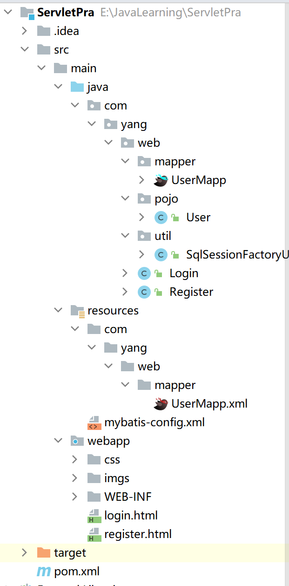
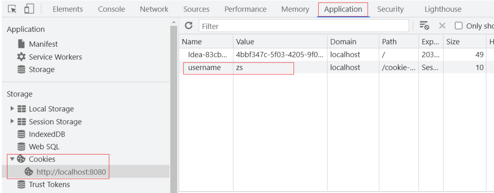

用户注册登录案例
学了Servlet和Request，Response，做一个案例巩固一下
需求分析

- 用户在登录页面输入用户名和密码，提交请求给LoginServlet
- 在LoginServlet中接收请求和数据[用户名和密码]
- 在LoginServlt中通过Mybatis实现调用UserMapper来根据用户名和密码查询数据库表
- 将查询的结果封装到User对象中进行返回
- 在LoginServlet中判断返回的User对象是否为null
- 如果为nul，说明根据用户名和密码没有查询到用户，则登录失败，返回”登录失败”数据给前端
- 如果不为null,则说明用户存在并且密码正确，则登录成功，返回”登录成功”数据给前端
环境准备
项目目录
User类：
public class User {
private Integer id;
private String username;
private String password;
//getter,setter,tostring省略
}
在项目的pom.xml导入Mybatis和Mysql驱动坐标
<dependency>
<groupId>org.mybatis</groupId>
<artifactId>mybatis</artifactId>
<version>3.5.5</version>
</dependency>
<dependency>
<groupId>mysql</groupId>
<artifactId>mysql-connector-java</artifactId>
<version>5.1.34</version>
</dependency>复习mybatis的使用
创建mybatis-config.xml核心配置文件，UserMapper.xml映射文件,UserMapper接口
<?xml version="1.0" encoding="UTF-8" ?>
<!DOCTYPE configuration
PUBLIC "-//mybatis.org//DTD Config 3.0//EN"
"http://mybatis.org/dtd/mybatis-3-config.dtd">
<configuration>
<!--起别名-->
<typeAliases>
<package name="com.yang.pojo"/>
</typeAliases>
<environments default="development">
<environment id="development">
<transactionManager type="JDBC"/>
<dataSource type="POOLED">
<property name="driver" value="com.mysql.jdbc.Driver"/>
<property name="url" value="jdbc:mysql:///test?useSSL=false&useServerPrepStmts=true"/>
<property name="username" value="mytest"/>
<property name="password" value="123456"/>
</dataSource>
</environment>
</environments>
<mappers>
<!--扫描mapper-->
<package name="com.yang.web.mapper"/>
</mappers>
</configuration><?xml version="1.0" encoding="UTF-8" ?>
<!DOCTYPE mapper
PUBLIC "-//mybatis.org//DTD Mapper 3.0//EN"
"http://mybatis.org/dtd/mybatis-3-mapper.dtd">
<mapper namespace="com.yang.web.mapper.UserMapp">
</mapper>UserMapp实现
public interface UserMapp {
@Select("select * from tb_users where username = #{username} and password = #{password}")
User select(@Param("username") String username, @Param("password") String password);
@Select("select * from tb_users where username = #{username}")
User selectByUsername(String username);
@Insert("insert into tb_users values(null,#{username},#{password})")
void add(User user);
}
loign.html文件：
<!DOCTYPE html>
<html lang="en">
<head>
<meta charset="UTF-8">
<title>login</title>
<link href="css/login.css" rel="stylesheet">
</head>
<body>
<div id="loginDiv">
<form action="/request-demo/loginServlet" method="post" id="form">
<h1 id="loginMsg">LOGIN IN</h1>
<p>Username:<input id="username" name="username" type="text"></p>
<p>Password:<input id="password" name="password" type="password"></p>
<div id="subDiv">
<input type="submit" class="button" value="login up">
<input type="reset" class="button" value="reset">
<a href="register.html">没有账号？点击注册</a>
</div>
</form>
</div>
</body>
</html>编写LoginServlet
@WebServlet("/loginServlet")
public class LoginServlet extends HttpServlet {
@Override
protected void doGet(HttpServletRequest request, HttpServletResponse response) throws ServletException, IOException {
//1. 接收用户名和密码
String username = request.getParameter("username");
String password = request.getParameter("password");
//2. 调用MyBatis完成查询
//2.1 获取SqlSessionFactory对象
String resource = "mybatis-config.xml";
InputStream inputStream = Resources.getResourceAsStream(resource);
SqlSessionFactory sqlSessionFactory = new SqlSessionFactoryBuilder().build(inputStream);
//2.2 获取SqlSession对象
SqlSession sqlSession = sqlSessionFactory.openSession();
//2.3 获取Mapper
UserMapper userMapper = sqlSession.getMapper(UserMapper.class);
//2.4 调用方法
User user = userMapper.select(username, password);
//2.5 释放资源
sqlSession.close();
//获取字符输出流，并设置content type
response.setContentType("text/html;charset=utf-8");
PrintWriter writer = response.getWriter();
//3. 判断user释放为null
if(user != null){
// 登陆成功
writer.write("登陆成功");
}else {
// 登陆失败
writer.write("登陆失败");
}
}
@Override
protected void doPost(HttpServletRequest request, HttpServletResponse response) throws ServletException, IOException {
this.doGet(request, response);
}
}用户注册需求分析
- 用户在注册页面输入用户名和密码，提交请求给RegisterServlet
- 在RegisterServlet中接收请求和数据[用户名和密码]
- 在RegisterServlet中通过Mybatis实现调用UserMapper来根据用户名查询数据库表
- 将查询的结果封装到User对象中进行返回
- 在RegisterServlet中判断返回的User对象是否为null
- 如果为nul，说明根据用户名可用，则调用UserMapper来实现添加用户
- 如果不为null,则说明用户不可以，返回”用户名已存在”数据给前端
register.html
<!DOCTYPE html>
<html lang="en">
<head>
<meta charset="UTF-8">
<title>欢迎注册</title>
<link href="css/register.css" rel="stylesheet">
</head>
<body>
<div class="form-div">
<div class="reg-content">
<h1>欢迎注册</h1>
<span>已有帐号？</span> <a href="login.html">登录</a>
</div>
<form id="reg-form" action="/request-demo/registerServlet" method="post">
<table>
<tr>
<td>用户名</td>
<td class="inputs">
<input name="username" type="text" id="username">
<br>
<span id="username_err" class="err_msg" style="display: none">用户名不太受欢迎</span>
</td>
</tr>
<tr>
<td>密码</td>
<td class="inputs">
<input name="password" type="password" id="password">
<br>
<span id="password_err" class="err_msg" style="display: none">密码格式有误</span>
</td>
</tr>
</table>
<div class="buttons">
<input value="注 册" type="submit" id="reg_btn">
</div>
<br class="clear">
</form>
</div>
</body>
</html>RegisterServlet类
@WebServlet("/registerServlet")
public class RegisterServlet extends HttpServlet {
@Override
protected void doGet(HttpServletRequest request, HttpServletResponse response) throws ServletException, IOException {
//1. 接收用户数据
String username = request.getParameter("username");
String password = request.getParameter("password");
//封装用户对象
User user = new User();
user.setUsername(username);
user.setPassword(password);
//2. 调用mapper 根据用户名查询用户对象
//2.1 获取SqlSessionFactory对象
String resource = "mybatis-config.xml";
InputStream inputStream = Resources.getResourceAsStream(resource);
SqlSessionFactory sqlSessionFactory = new SqlSessionFactoryBuilder().build(inputStream);
//2.2 获取SqlSession对象
SqlSession sqlSession = sqlSessionFactory.openSession();
//2.3 获取Mapper
UserMapper userMapper = sqlSession.getMapper(UserMapper.class);
//2.4 调用方法
User u = userMapper.selectByUsername(username);
//3. 判断用户对象释放为null
if( u == null){
// 用户名不存在，添加用户
userMapper.add(user);
// 提交事务
sqlSession.commit();
// 释放资源
sqlSession.close();
}else {
// 用户名存在，给出提示信息
response.setContentType("text/html;charset=utf-8");
response.getWriter().write("用户名已存在");
}
}
@Override
protected void doPost(HttpServletRequest request, HttpServletResponse response) throws ServletException, IOException {
this.doGet(request, response);
}
}SqlSessionFactory工具类抽取
上面两个功能已经实现，但是在写Servlet的时候，因为需要使用Mybatis来完成数据库的操作，所以对于Mybatis的基础操作就出现了些重复代码，如下
String resource = "mybatis-config.xml";
InputStream inputStream = Resources.getResourceAsStream(resource);
SqlSessionFactory sqlSessionFactory = new
SqlSessionFactoryBuilder().build(inputStream);有了这些重复代码就会造成一些问题:
重复代码不利于后期的维护
SqlSessionFactory工厂类进行重复创建
- 就相当于每次买手机都需要重新创建一个手机生产工厂来给你制造一个手机一样，资源消耗非常大但性能却非常低。所以这么做是不允许的。
代码重复可以抽取工具类
对指定代码只需要执行一次可以使用静态代码块
SqlSessionFactory工具类：
public class SqlSessionFactoryUtils {
private static SqlSessionFactory sqlSessionFactory;
static {
//静态代码块会随着类的加载而自动执行，且只执行一次
try {
String resource = "mybatis-config.xml";
InputStream inputStream = Resources.getResourceAsStream(resource);
sqlSessionFactory = new SqlSessionFactoryBuilder().build(inputStream);
} catch (IOException e) {
e.printStackTrace();
}
}
public static SqlSessionFactory getSqlSessionFactory(){
return sqlSessionFactory;
}
}工具类抽取以后，以后在对Mybatis的SqlSession进行操作的时候，就可以直接使用
SqlSessionFactory sqlSessionFactory =SqlSessionFactoryUtils.getSqlSessionFactory();这样就可以很好的解决上面所说的代码重复和重复创建工厂导致性能低的问题了。
会话技术
会话概念：
- 从浏览器发出请求到服务端响应数据给前端之后，一次会话(在浏览器和服务器之间)就被建立了
- 会话被建立后，如果浏览器或服务端都没有被关闭，则会话就会持续建立着
- 浏览器和服务器就可以继续使用该会话进行请求发送和响应，上述的整个过程就被称之为会话。
会话跟踪:一种维护浏览器状态的方法，服务器需要识别多次请求是否来自于同一浏览器，以便在同一次会话的多次请求间共享数据。
- 服务器会收到多个请求，这多个请求可能来自多个浏览器，如上图中的6个请求来自3个浏览器
- 服务器需要用来识别请求是否来自同一个浏览器
- 服务器用来识别浏览器的过程，这个过程就是会话跟踪
- 服务器识别浏览器后就可以在同一个会话中多次请求之间来共享数据
客户端会话跟踪技术：Cookie
服务端会话跟踪技术：Session
Cookie
Cookie的基本使用
- 创建Cookie对象，并设置数据
Cookie cookie = new Cookie("key","value");- 发送Cookie到客户端：使用response对象
response.addCookie(cookie);代码示例：
@WebServlet("/aServlet")
public class AServlet extends HttpServlet {
@Override
protected void doGet(HttpServletRequest request, HttpServletResponse response) throws ServletException, IOException {
//发送Cookie
//1. 创建Cookie对象
Cookie cookie = new Cookie("username","zs");
//2. 发送Cookie，response
response.addCookie(cookie);
}
@Override
protected void doPost(HttpServletRequest request, HttpServletResponse response) throws ServletException, IOException {
this.doGet(request, response);
}
}访问网站后，到Google浏览器设置中的隐私设置与安全找cookie。或者F12打开开发者模式
获取Cookie
- 获取客户端携带的所有Cookie，使用request对象
Cookie[] cookies = request.getCookies();- 遍历数组，获取每一个Cookie对象：for
- 使用Cookie对象方法获取数据
cookie.getName();
cookie.getValue();代码示例：
@WebServlet("/bServlet")
public class BServlet extends HttpServlet {
@Override
protected void doGet(HttpServletRequest request, HttpServletResponse response) throws ServletException, IOException {
//获取Cookie
//1. 获取Cookie数组
Cookie[] cookies = request.getCookies();
//2. 遍历数组
for (Cookie cookie : cookies) {
//3. 获取数据
String name = cookie.getName();
if("username".equals(name)){
String value = cookie.getValue();
System.out.println(name+":"+value);
break;
}
}
}
@Override
protected void doPost(HttpServletRequest request, HttpServletResponse response) throws ServletException, IOException {
this.doGet(request, response);
}
}访问完aservlet，再访问bservlet，控制台打印了cookie
对于Cookie的实现原理是基于HTTP协议的,其中设计到HTTP协议中的两个请求头信息:
- 响应头:set-cookie
- 请求头: cookie
Cookie的存活时间
- 设置Cookie存活时间
setMaxAge(int seconds)参数值:
1.正数：将Cookie写入浏览器所在电脑的硬盘，持久化存储。到时间自动删除
2.负数：默认值，Cookie在当前浏览器内存中，当浏览器关闭，则Cookie被销毁
3.零：删除对应Cookie
在Aervlet中去设置Cookie的存活时间。
@WebServlet("/aServlet")
public class AServlet extends HttpServlet {
@Override
protected void doGet(HttpServletRequest request, HttpServletResponse response) throws ServletException, IOException {
//发送Cookie
//1. 创建Cookie对象
Cookie cookie = new Cookie("username","zs");
//设置存活时间 ，1周 7天
cookie.setMaxAge(60*60*24*7); //易阅读，需程序计算
//cookie.setMaxAge(604800); //不易阅读(可以使用注解弥补)，程序少进行一次计算
//2. 发送Cookie，response
response.addCookie(cookie);
}
@Override
protected void doPost(HttpServletRequest request, HttpServletResponse response) throws ServletException, IOException {
this.doGet(request, response);
}
}Cookie存储中文
Cookie不能直接存储中文
(1)在AServlet中对中文进行URL编码
@WebServlet("/aServlet")
public class AServlet extends HttpServlet {
@Override
protected void doGet(HttpServletRequest request, HttpServletResponse response) throws ServletException, IOException {
//发送Cookie
String value = "张三";
//对中文进行URL编码
value = URLEncoder.encode(value, "UTF-8");
System.out.println("存储数据："+value);
//将编码后的值存入Cookie中
Cookie cookie = new Cookie("username",value);
//设置存活时间 ，1周 7天
cookie.setMaxAge(60*60*24*7);
//2. 发送Cookie，response
response.addCookie(cookie);
}
@Override
protected void doPost(HttpServletRequest request, HttpServletResponse response) throws ServletException, IOException {
this.doGet(request, response);
}
}(2)在BServlet中获取值，并对值进行解码
@WebServlet("/bServlet")
public class BServlet extends HttpServlet {
@Override
protected void doGet(HttpServletRequest request, HttpServletResponse response) throws ServletException, IOException {
//获取Cookie
//1. 获取Cookie数组
Cookie[] cookies = request.getCookies();
//2. 遍历数组
for (Cookie cookie : cookies) {
//3. 获取数据
String name = cookie.getName();
if("username".equals(name)){
String value = cookie.getValue();//获取的是URL编码后的值 %E5%BC%A0%E4%B8%89
//URL解码
value = URLDecoder.decode(value,"UTF-8");
System.out.println(name+":"+value);//value解码后为 张三
break;
}
}
}
@Override
protected void doPost(HttpServletRequest request, HttpServletResponse response) throws ServletException, IOException {
this.doGet(request, response);
}
}Session
服务端会话跟踪技术：将数据保存到服务端。
- Session是存储在服务端而Cookie是存储在客户端
- 存储在客户端的数据容易被窃取和截获，存在很多不安全的因素
- 存储在服务端的数据相比于客户端来说就更安全
Session的基本使用
在JavaEE中提供了HttpSession接口，来实现一次会话的多次请求之间数据共享功能。
具体的使用步骤为:
- 获取Session对象,使用的是request对象
HttpSession session = request.getSession();Session对象提供的功能:
存储数据到 session 域中
void setAttribute(String name, Object o)根据 key，获取值
Object getAttribute(String name)根据 key，删除该键值对
void removeAttribute(String name)
代码实例：
SessionDemo1:获取Session对象、存储数据
@WebServlet("/demo1")
public class SessionDemo1 extends HttpServlet {
@Override
protected void doGet(HttpServletRequest request, HttpServletResponse response) throws ServletException, IOException {
//存储到Session中
//1. 获取Session对象
HttpSession session = request.getSession();
//2. 存储数据
session.setAttribute("username","zs");
}
@Override
protected void doPost(HttpServletRequest request, HttpServletResponse response) throws ServletException, IOException {
this.doGet(request, response);
}
}SessionDemo2:获取Session对象、获取数据
@WebServlet("/demo2")
public class SessionDemo2 extends HttpServlet {
@Override
protected void doGet(HttpServletRequest request, HttpServletResponse response) throws ServletException, IOException {
//获取数据，从session中
//1. 获取Session对象
HttpSession session = request.getSession();
//2. 获取数据
Object username = session.getAttribute("username");
System.out.println(username);
}
@Override
protected void doPost(HttpServletRequest request, HttpServletResponse response) throws ServletException, IOException {
this.doGet(request, response);
}
}Session的原理分析
Session是基于Cookie实现的
Session要想实现一次会话多次请求之间的数据共享，就必须要保证多次请求获取Session的对象是同一个。
如何保证？？
(1)demo1在第一次获取session对象的时候，session对象会有一个唯一的标识，假如是
id:10(2)demo1在session中存入其他数据并处理完成所有业务后，需要通过Tomcat服务器响应结果给浏览器
(3)Tomcat服务器发现业务处理中使用了session对象，就会把session的唯一标识
id:10当做一个cookie，添加Set-Cookie:JESSIONID=10到响应头中，并响应给浏览器(4)浏览器接收到响应结果后，会把响应头中的coookie数据存储到浏览器的内存中
(5)浏览器在同一会话中访问demo2的时候，会把cookie中的数据按照
cookie: JESSIONID=10的格式添加到请求头中并发送给服务器Tomcat(6)demo2获取到请求后，从请求头中就读取cookie中的JSESSIONID值为10，然后就会到服务器内存中寻找
id:10的session对象，如果找到了，就直接返回该对象，如果没有则新创建一个session对象(7)关闭打开浏览器后，因为浏览器的cookie已被销毁，所以就没有JESSIONID的数据，服务端获取到的session就是一个全新的session对象
Session钝化与活化
钝化：在服务器正常关闭后，Tomcat会自动将Session数据写入硬盘的文件中
活化：再次启动服务器后，从文件中加载数据到Session中
- 数据加载到Session中后，路径中的
SESSIONS.ser文件会被删除掉
- 数据加载到Session中后，路径中的
Session销毁
session的销毁会有两种方式:
默认情况下，无操作，30分钟自动销毁
对于这个失效时间，是可以通过配置进行修改的
在项目的web.xml中配置
<?xml version="1.0" encoding="UTF-8"?> <web-app xmlns="http://xmlns.jcp.org/xml/ns/javaee" xmlns:xsi="http://www.w3.org/2001/XMLSchema-instance" xsi:schemaLocation="http://xmlns.jcp.org/xml/ns/javaee http://xmlns.jcp.org/xml/ns/javaee/web-app_3_1.xsd" version="3.1"> <session-config> <session-timeout>100</session-timeout> </session-config> </web-app>如果没有配置，默认是30分钟，默认值是在Tomcat的web.xml配置文件中写死的
Cookie和Session小结
- Cookie 和 Session 都是来完成一次会话内多次请求间数据共享的。
所需两个对象放在一块，就需要思考:
Cookie和Session的区别是什么?
Cookie和Session的应用场景分别是什么?
- 区别:
- 存储位置：Cookie 是将数据存储在客户端，Session 将数据存储在服务端
- 安全性：Cookie不安全，Session安全
- 数据大小：Cookie最大3KB，Session无大小限制
- 存储时间：Cookie可以通过setMaxAge()长期存储，Session默认30分钟
- 服务器性能：Cookie不占服务器资源，Session占用服务器资源
- 应用场景:
- 购物车:使用Cookie来存储
- 以登录用户的名称展示:使用Session来存储
- 记住我功能:使用Cookie来存储
- 验证码:使用session来存储
- 结论
- Cookie是用来保证用户在未登录情况下的身份识别
- Session是用来保存用户登录后的数据